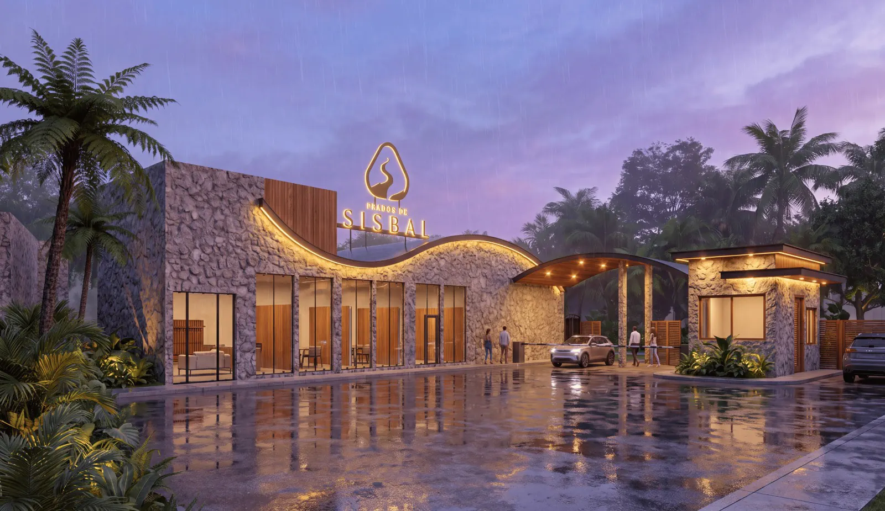
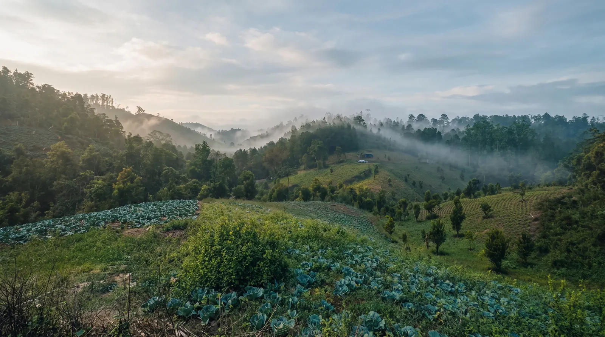
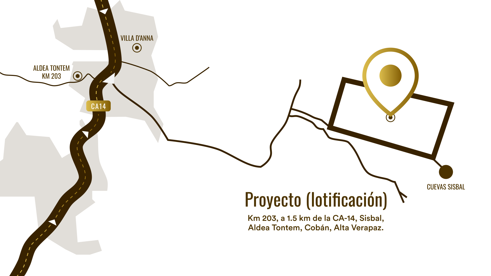
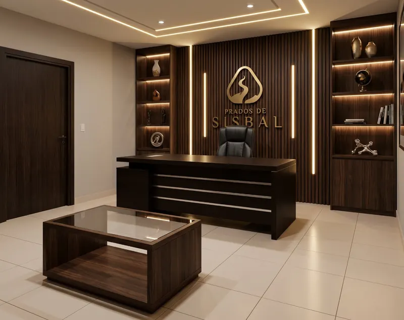

Promoción especial
Primeros 100 clientes
Paga el resto de tu lote en 18 meses, sin intereses, al precio de contado.
Cuotas desde
Q5,958.33
al mes
Ejemplo con enganche del 25 %: Q35,750.00 + 18 cuotas de Q5,958.33.
Quiero la promoción
Preventa Fase 1 · Cobán, Alta Verapaz
Donde la tranquilidad del campo se une con la cercanía de la ciudad. Lotes de 200 m² rodeados de naturaleza, seguridad y buenos vecinos.
Prados de
Un lugar con historia propia para escribir la tuya
En Prados de Sisbal encontramos ese punto exacto donde la tranquilidad del campo se une con la cercanía de la ciudad. Un lugar con raíces, pensado para que tu familia crezca rodeada de naturaleza, seguridad y buenos vecinos, con todo lo necesario para construir el hogar que siempre imaginaste.

Hay lugares que tienen nombre antes de que alguien llegue a ponérselo. Sisbal es uno de ellos: a pocos metros de este terreno existe la Cueva de Sisbal, el lugar del desahumerio ceremonial, donde la comunidad q'eqchi' quemaba copal como ofrenda y el humo subía como un mensaje hacia los ancestros. No era solo una cueva, era un umbral entre mundos.
Esta tierra, en Aldea Tontem, lleva siglos habitada, nombrada y cuidada por su gente: nacimientos de agua cristalina, colinas de bosque denso y generaciones de artesanos que trabajaron la madera de estos montes. Prados de Sisbal nace de esa historia real, un lugar con identidad propia, hoy convertido en el próximo polo de expansión de Cobán.
Sisbal está ubicado en Aldea Tontem, Cobán, Alta Verapaz, en el kilómetro 203, a solo 1.5 km de la CA-14. Un acceso cómodo, rodeado de entorno natural, pensado para quienes buscan calidad de vida sin alejarse de las rutas principales.
Kilómetro 203, a 1.5 km de la CA-14, SisbalAldea Tontem, Cobán, Alta Verapaz

Porque vivir bien es también tener dónde compartir, jugar y desconectar.
Garita de seguridad las 24 horas, los 7 días de la semana.
Cámaras de seguridad en todo el residencial.
Parqueo habilitado para tus visitas.
Área comercial con supermercado, farmacia y más servicios a tu alcance.
Calles pavimentadas de 6 metros de ancho.
Áreas destinadas para banquetas.
Servicio de agua potable.
Alumbrado público y energía eléctrica.
Acceso a internet de fibra óptica.
Servicio de recolección de basura.
*Aplica cuota de mantenimiento
Asegura hoy tu lote con las mejores condiciones de todo el proyecto. Este precio de preventa es exclusivo para los primeros compradores de la Fase 1.
En la compra de tu lote te regalamos un biodigestor para tu vivienda.
Primeros 100 clientes
Paga el resto de tu lote en 18 meses, sin intereses, al precio de contado.
Cuotas desde
Q5,958.33
al mes
Ejemplo con enganche del 25 %: Q35,750.00 + 18 cuotas de Q5,958.33.
Quiero la promoción
Visítanos
6ta. avenida 5-16, zona 1,
Cobán, Alta Verapaz.
Conoce el proyecto, revisa la disponibilidad de lotes de la Fase 1 y resuelve tus dudas sobre el financiamiento con nuestro equipo.
Prados de Sisbal es más que un terreno: es la oportunidad de darle a tu familia un lugar con raíces, seguridad y comunidad. Los lotes de esta primera fase son limitados, aparta el tuyo hoy y sé parte de los primeros en seguir escribiendo la historia de este lugar.